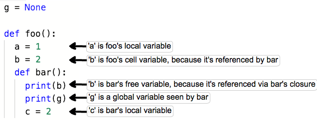
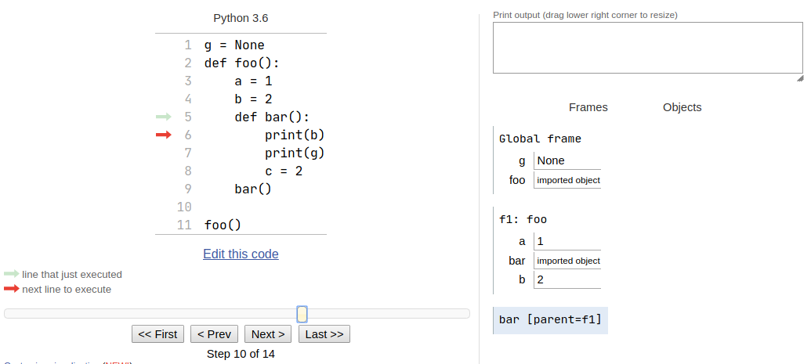
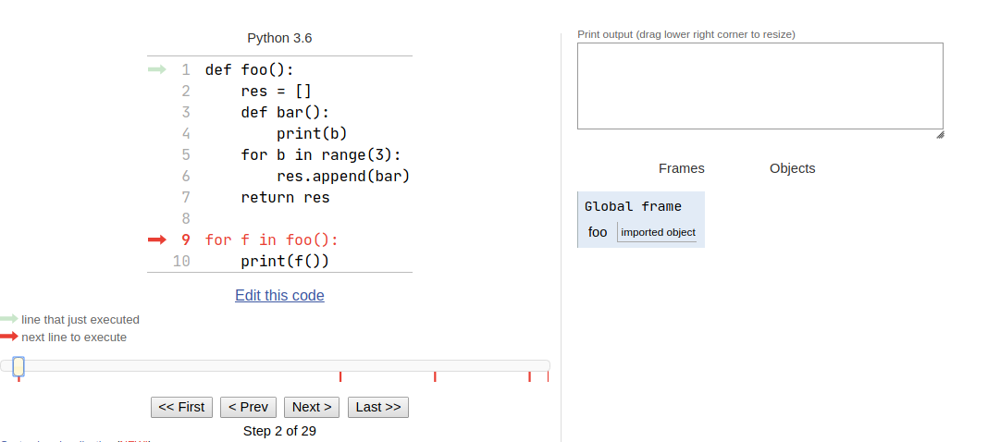
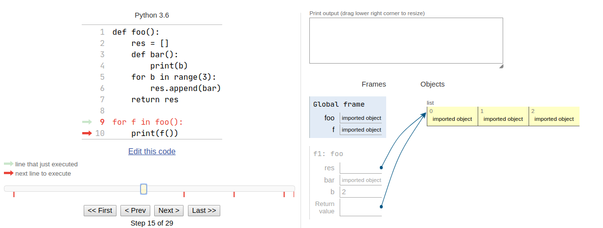
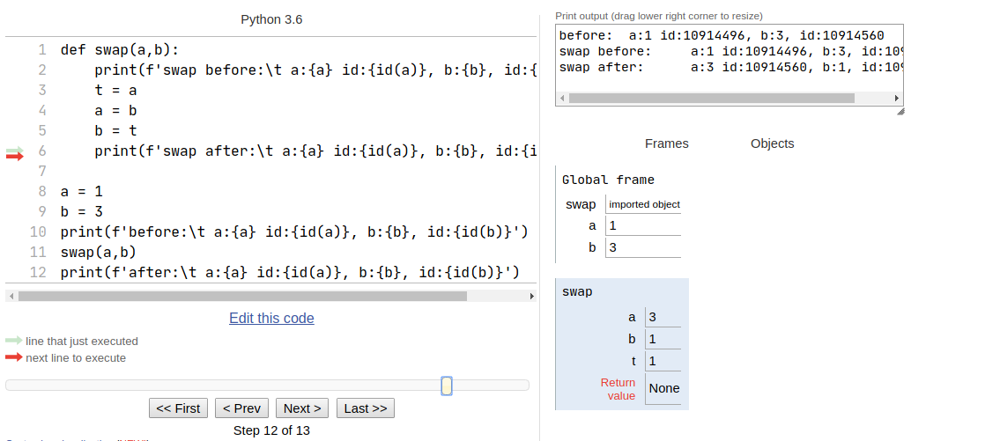
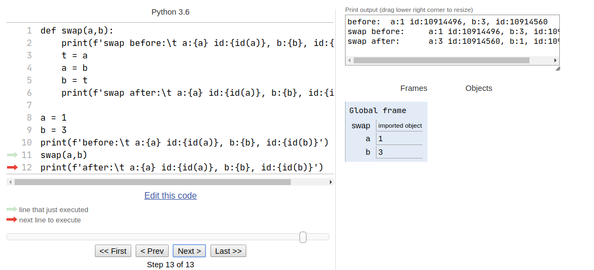

Python一直以来都因看上去简单易用, 而受到不少人的青睐, 然鹅, 架不住一些历史和设计的原因 存在不少令人抓狂的规则, 让人摸不到头脑.

来自: twitter/laike9m
今天在瞎写自己的tweedle这个CLI工具时, 终于被上图的某个错误理解而导致不断报错, 于是我决定, 重拾基础, 争取通过此文整理好Python中作用域和传递对象引用的相关的坑
一般这种时候没有一个非常友好的inspect方法是不行的, 那么我们需要立刻寻找相关命令行工具和模块?
No~No~No~, 就我以前的开发经历来看, 常常会因解决X而递归的解决一系列路上遇到的问题,最后解决了Y…效率实在不太好, 于是掏出神器 Python Tutor 来基本观察内部结构变化, 之后再上那些屠龙刀(这个作者看上去一点也Hack啊 = =|||), 具体效果如下图所示(可能有网不太好的同学,体验稍差,可以在此Repo https://github.com/pgbovine/OnlinePythonTutor 按README指导自行安装部署本地版本哦):

复制以下代码, 自己感受下吧!
g = None
def foo():
a = 1
b = 2
def bar():
print(b)
print(g)
c = 2
bar()
foo()
注意: 未经特殊声明, 代码版本均使用
CPython3.6
作用域 (Scopt)
首先需要明确的一点是, 在函数中访问任何变量, 都会以特定的顺序依次查找不同层次的作用域, 具体规则表现为
LEGB (Locals Enclosing Globals Builtins) 这四级命名空间, 其中 L 与 G 都是很好观测到的, 你可以运行以下代码, 在解释器中使用globals()与locals()函数观测:
def current_func_name():
import inspect
frame = inspect.currentframe()
return inspect.getouterframes(frame)[1].function
g = None
def foo():
a = 1
b = 2
print('\t',current_func_name(),'(before bar)',locals()) # 1
def bar():
print(b)
print(g)
c = 2
print('\t',current_func_name(),locals()) # 2
print('\t',current_func_name(),'g' in globals()) # 3
bar()
# print(current_func_name(),globals())
print('\t',current_func_name(),'(after bar)',locals()) # 4
foo()
# print('\t',globals()) or print('\t',locals())
将会输出(具体地址可能会不一样,这取决于当时的运行时 指 0x7f8c4ffec3a0)
foo before bar {'a': 1, 'b': 2}
2
None
bar {'c': 2, 'b': 2}
bar True
foo after bar {'a': 1, 'b': 2, 'bar': <function foo.<locals>.bar at 0x7f8c4ffec3a0>}
这里我们清楚的看到正如一开始的图片上一样的解释的一样
- # 1:
a,b都是放在了Locals这个地方, 这时还未知下面的闭包函数 - # 2:
c也按照期望进入了Locals, 而b此时将作为 bar() 这个函数的自由变量函数而进入Locals - # 3: 也按照期望观察到
g确实存在于Globals而不传递进入任何Locals中 - # 4:
c不再存在于Locals作用域, 而bar这个函数作为一等公民进入foo的Locals
看完这些, 你可能感觉到, 啊哼, 也没有什么不符合直觉的地方吗? 这有什么会坑的地方吗? 而且这个Enclosing, Builtins也没说啊?
事实上, 好戏才刚刚开始… 观察以下代码, 觉得会输出什么
def foo():
res = []
def bar():
print(b)
for b in range(3):
res.append(bar)
return res
for f in foo():
f()
也许你会觉得这会报错, 因为很反直觉, 竟然bar函数可以引用一个之前没有 “声明/定义” 的变量, 如果你很是好奇, 将代码复制到解释器执行的话, 你会发现解释器没有任何怨言:
2
2
2
WTF, 这发生了什么? (可以尝试使用 Python Tutor 观测) 这里我截取重要的两个节点:
第一次进入
print(f())之前 第二次进入
print(f())之前  可以观测到 f1:foo 的 栈帧中 相对bar函数来说b这个自由变量(enclosing cell var)的值就已经变为了最终值 2 了, 所以即使再次运行也只会是最终结果了, 这里这个闭包函数被延后求值了.
你可能还会有疑问, 为啥再之前 print(b) 不会导致解释器报错, 因为如果在解释器中随便输出一个”未声明”的值之前都会收到类似 NameError: name 'a' is not defined的错误, 这就回到了我们最初所说的寻找顺序规则的问题, 当然在上面的情况下,发生了 L(Not Hit) -> E(Hit) 的情况, 注意顺序寻找规则就能观察这些奇怪问题并排错了…
问题又来了, 这个情况该如何解决呢, 可以复制解决(这里又有一个小坑, Python中的=仅仅是名字绑定, 它的所谓变量并不是盒子, 仅仅通过局部期望通过=复制一个值, 是不会成功的, 这对从C/C++转来学习的同学很有帮助, 硬要说的话, 它更类似指针, 当然也不全是如此)
def foo():
res = []
for b in range(3):
def bar(o=b):
print(o)
res.append(bar)
return res
for f in foo():
f()
或者调整为纯函数
def foo():
res = []
def bar(o):
print(o)
for b in range(3):
res.append(bar(b))
return res
for f in foo():
print(f())
言而总之, 这样直接的代码可能不太常见和实用, 但当你写代码写飘了的时候, 有可能会不小心导致这个情况发生.建议函数尽量设计为不依赖自由变量的纯函数.
闭包可以很好的封装状态, 压缩参数列表, 不过隐式依赖自由变量, 会使得测试和维护变得困难, 所以, 对于过多参数的函数. 可以使用functools.partial函数压缩过多参数绑定, 或者使用 callable object 去实现
传递对象引用 (pass object)
接下来讨论一个参数传递的问题, 对一些来自 C/C++ 背景的爱好者们, 基本上来说, 对传递参数, 有按值传递(pass by value) 与 按引用/指针传递 (pass by ref/point), 而在Python中, 整体上更像第二种, 但却有些不同, 或者叫做按引用值传递(pass ref by value)?.
Python中函数得到的是参数的副本, 对其重新绑定对外面没有任何影响, 但参数始终是引用(即名字绑定), 按照不同的名字在绑定的作用域中寻找对象并修改.
- 如果参数引用名字类型为可变, 那么可变对象内部可以修改, 对象底层标志不变
- 如果参数引用名字类型为不可变, 如
int,float,complex等, 内部也不可修改, 只会发生重新 bind, 底层标志也不变 比如, 我一开始会写出这样的代码,去交换两个值:
def swap(a,b):
print(f'swap before:\t a:{a}, b:{b}')
t = a
a = b
b = t
print(f'swap after:\t a:{a}, b:{b}')
a = 1
b = 3
print(f'before:\t a:{a}, b:{b}')
swap(a,b)
print(f'after:\t a:{a}, b:{b}')
当时很不明白为何无法修改
before: a:1, b:3
swap before: a:1, b:3
swap after: a:3, b:1
after: a:1, b:3
即使通过查看id
def swap(a,b):
print(f'swap before:\t a:{a} id:{id(a)}, b:{b}, id:{id(b)}')
t = a
a = b
b = t
print(f'swap after:\t a:{a} id:{id(a)}, b:{b}, id:{id(b)}')
a = 1
b = 3
print(f'before:\t a:{a} id:{id(a)}, b:{b}, id:{id(b)}')
swap(a,b)
print(f'after:\t a:{a} id:{id(a)}, b:{b}, id:{id(b)}')
也没有看到确切变化
before: a:1 id:94304221255424, b:3, id:94304221255488
swap before: a:1 id:94304221255424, b:3, id:94304221255488
swap after: a:3 id:94304221255488, b:1, id:94304221255424
after: a:1 id:94304221255424, b:3, id:94304221255488
这里我以 Python Tutor 作验证:


观察这两张图我发现, 在离开swap之后, 内部的a,b绑定不再存在, 一切恢复了原样, 这是在开玩笑吗?
其实不是这里a,b发生的id改变, 仅仅是名字本身的变化, 而不是底层那个 int类型 的 object 发生改变, 这个对象还在原来的地方,被外层的a,b绑定着, 这也解释了为何调用swap不符合预期, 在swap内部, 由于之前提到的规则, 先于在 Locals 找到了符合的名字, 之后修改的全是这个层面的值, 而无关外部不可变的a,b状态.
至于进一步的解释, 我也查询了许多资料, 由于不看源码的话, 感觉全是魔法, 日后有时间研究底层实现, 会再来更新的!
写到这里, 这篇文章就差不多了, 希望可以帮助到你 ^_^
参考资料:
Python3.6 文档 Data Model
《Python3学习笔记》 雨痕
《流畅的Python》Luciano Ramalho
https://stackoverflow.com/questions/8056130/immutable-vs-mutable-types
https://www.zhihu.com/search?type=content&q=python%20%E5%AF%B9%E8%B1%A1%E4%BC%A0%E9%80%92
本博客所有文章除特别声明外，均采用 CC BY-SA 3.0协议 。转载请注明出处！